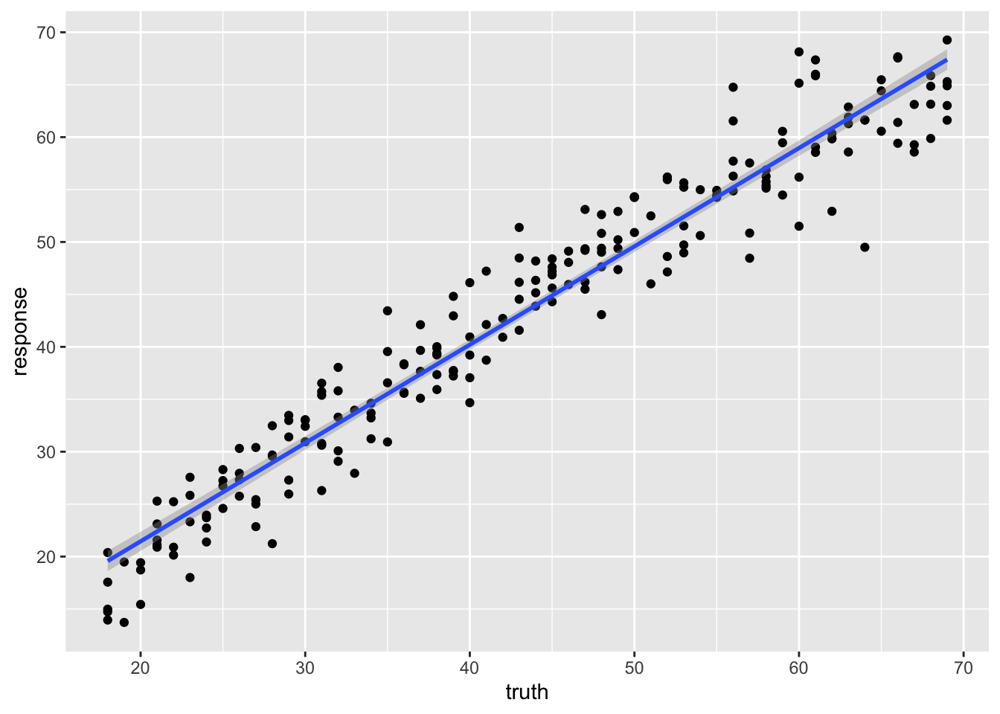
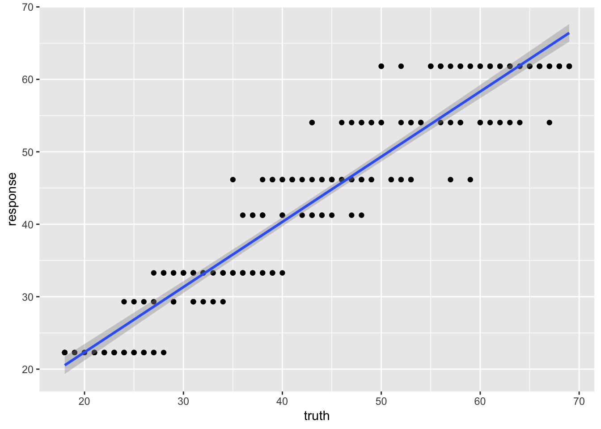
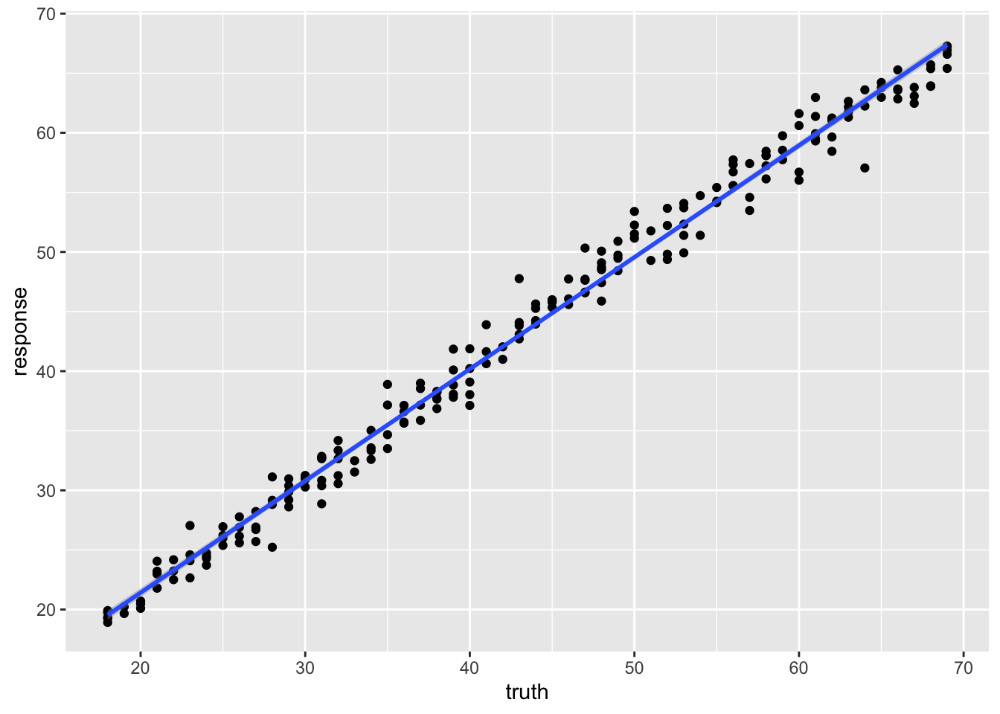

Machine Learning in R with mlr3
Sean Davis
2022-07-04
Background
- Supervised
- Classification
- Regression
- Unsupervised
- “Clustering”
- Dimensionality reduction

Specific methods
Linear regression
In statistics, linear regression is a linear approach for modelling the relationship between a scalar response and one or more explanatory variables (also known as dependent and independent variables). The case of one explanatory variable is called simple linear regression; for more than one, the process is called multiple linear regression. This term is distinct from multivariate linear regression, where multiple correlated dependent variables are predicted, rather than a single scalar variable.
In linear regression, the relationships are modeled using linear predictor functions whose unknown model parameters are estimated from the data. Such models are called linear models. Most commonly, the conditional mean of the response given the values of the explanatory variables (or predictors) is assumed to be an affine function of those values; less commonly, the conditional median or some other quantile is used. Like all forms of regression analysis, linear regression focuses on the conditional probability distribution of the response given the values of the predictors, rather than on the joint probability distribution of all of these variables, which is the domain of multivariate analysis.
Linear regression was the first type of regression analysis to be studied rigorously, and to be used extensively in practical applications. This is because models which depend linearly on their unknown parameters are easier to fit than models which are non-linearly related to their parameters and because the statistical properties of the resulting estimators are easier to determine.
K-nearest Neighbor

Figure. The k-nearest neighbor algorithm can be used for regression or classification.
In statistics, the k-nearest neighbors algorithm (k-NN) is a non-parametric supervised learning method first developed by Evelyn Fix and Joseph Hodges in 1951, and later expanded by Thomas Cover. It is used for classification and regression. In both cases, the input consists of the k closest training examples in a data set. The output depends on whether k-NN is used for classification or regression:
In k-NN classification, the output is a class membership. An object is classified by a plurality vote of its neighbors, with the object being assigned to the class most common among its k nearest neighbors (k is a positive integer, typically small). If k = 1, then the object is simply assigned to the class of that single nearest neighbor.
In k-NN regression, the output is the property value for the object. This value is the average of the values of k nearest neighbors.
k-NN is a type of classification where the function is only approximated locally and all computation is deferred until function evaluation. Since this algorithm relies on distance for classification, if the features represent different physical units or come in vastly different scales then normalizing the training data can improve its accuracy dramatically.
Both for classification and regression, a useful technique can be to assign weights to the contributions of the neighbors, so that the nearer neighbors contribute more to the average than the more distant ones. For example, a common weighting scheme consists in giving each neighbor a weight of 1/d, where d is the distance to the neighbor.
The neighbors are taken from a set of objects for which the class (for k-NN classification) or the object property value (for k-NN regression) is known. This can be thought of as the training set for the algorithm, though no explicit training step is required.
Classification and Regression Trees (CART)
Decision Tree Learning is supervised learning approach used in statistics, data mining and machine learning. In this formalism, a classification or regression decision tree is used as a predictive model to draw conclusions about a set of observations. Tree models where the target variable can take a discrete set of values are called classification trees; in these tree structures, leaves represent class labels and branches represent conjunctions of features that lead to those class labels. Decision trees where the target variable can take continuous values (typically real numbers) are called regression trees.

Figure. An example of a decision tree that performs classification, also sometimes called a classification tree.
RandomForest
Random forests or random decision forests is an ensemble learning method for classification, regression and other tasks that operates by constructing a multitude of decision trees at training time. For classification tasks, the output of the random forest is the class selected by most trees. For regression tasks, the mean or average prediction of the individual trees is returned. Random decision forests correct for decision trees’ habit of overfitting to their training set. Random forests generally outperform decision trees, but their accuracy is lower than gradient boosted trees\[_[citation needed](https://en.wikipedia.org/wiki/Wikipedia:Citation_needed "Wikipedia:Citation needed")_\]. However, data characteristics can affect their performance.
The first algorithm for random decision forests was created in 1995 by Tin Kam Ho using the random subspace method, which, in Ho’s formulation, is a way to implement the “stochastic discrimination” approach to classification proposed by Eugene Kleinberg.
An extension of the algorithm was developed by Leo Breiman and Adele Cutler, who registered “Random Forests” as a trademark in 2006 (as of 2019\[update\], owned by Minitab, Inc.). The extension combines Breiman’s “bagging” idea and random selection of features, introduced first by Ho and later independently by Amit and Geman in order to construct a collection of decision trees with controlled variance.
Random forests are frequently used as “blackbox” models in businesses, as they generate reasonable predictions across a wide range of data while requiring little configuration.

Figure. Random forests or random decision forests is an ensemble learning method for classification, regression and other tasks that operates by constructing a multitude of decision trees at training time.
Working with Data
mlr3

Figure. The mlr3 ecosystem is rich and growing quickly
Tasks
Tasks are objects that contain the (usually tabular) data and additional meta-data to define a machine learning problem. The meta-data is, for example, the name of the target variable for supervised machine learning problems, or the type of the dataset (e.g. a spatial or survival task). This information is used by specific operations that can be performed on a task.
Tasks are objects that contain the (usually tabular) data and additional meta-data to define a machine learning problem. The meta-data is, for example, the name of the target variable for supervised machine learning problems, or the type of the dataset (e.g. a spatial or survival task). This information is used by specific operations that can be performed on a task.
Task Types
To create a task from a data.frame(),
data.table()
or Matrix(),
you first need to select the right task type:
Classification Task: The target is a label (stored as
characterorfactor) with only relatively few distinct values →TaskClassif.Regression Task: The target is a numeric quantity (stored as
integerornumeric) →TaskRegr.Survival Task: The target is the (right-censored) time to an event. More censoring types are currently in development →
mlr3proba::TaskSurvin add-on package mlr3proba.Density Task: An unsupervised task to estimate the density →
mlr3proba::TaskDensin add-on package mlr3proba.Cluster Task: An unsupervised task type; there is no target and the aim is to identify similar groups within the feature space →
mlr3cluster::TaskClustin add-on package mlr3cluster.Spatial Task: Observations in the task have spatio-temporal information (e.g. coordinates) →
mlr3spatiotempcv::TaskRegrSTormlr3spatiotempcv::TaskClassifSTin add-on package mlr3spatiotempcv.Ordinal Regression Task: The target is ordinal →
TaskOrdinalin add-on package mlr3ordinal (still in development).
Learners
Objects of class Learner
provide a unified interface to many popular machine learning algorithms
in R. They consist of methods to train and predict a model for a Task
and provide meta-information about the learners, such as the
hyperparameters (which control the behavior of the learner) you can
set.
The base class of each learner is Learner,
specialized for regression as LearnerRegr
and for classification as LearnerClassif.
Other types of learners, provided by extension packages, also inherit
from the Learner
base class, e.g. mlr3proba::LearnerSurv
or mlr3cluster::LearnerClust.
All Learners work in a two-stage procedure:

- Training stage: The training data (features and
target) is passed to the Learner’s
$train()function which trains and stores a model, i.e. the relationship of the target and features. - Predict stage: The new data, usually a different
slice of the original data than used for training, is passed to the
$predict()method of the Learner. The model trained in the first step is used to predict the missing target, e.g. labels for classification problems or the numerical value for regression problems.
Predefined Learners
The mlr3 package ships with the following set of classification and regression learners. We deliberately keep this small to avoid unnecessary dependencies:
classif.featureless: Simple baseline classification learner. The default is to always predict the label that is most frequent in the training set. While this is not very useful by itself, it can be used as a “fallback learner” to make predictions in case another, more sophisticated, learner failed for some reason.regr.featureless: Simple baseline regression learner. The default is to always predict the mean of the target in training set. Similar tomlr_learners_classif.featureless, it makes for a good “fallback learner”classif.rpart: Single classification tree from package rpart.regr.rpart: Single regression tree from package rpart.
This set of baseline learners is usually insufficient for a real data analysis. Thus, we have cherry-picked implementations of the most popular machine learning method and collected them in the mlr3learners package:
- Linear (
regr.lm) and logistic (classif.log_reg) regression - Penalized Generalized Linear Models (
regr.glmnet,classif.glmnet), possibly with built-in optimization of the penalization parameter (regr.cv_glmnet,classif.cv_glmnet) - (Kernelized) k-Nearest Neighbors regression (
regr.kknn) and classification (classif.kknn). - Kriging / Gaussian Process Regression (
regr.km) - Linear (
classif.lda) and Quadratic (classif.qda) Discriminant Analysis - Naive Bayes Classification (
classif.naive_bayes) - Support-Vector machines (
regr.svm,classif.svm) - Gradient Boosting (
regr.xgboost,classif.xgboost) - Random Forests for regression and classification (
regr.ranger,classif.ranger)
More machine learning methods and alternative implementations are collected in the mlr3extralearners repository.
Setup
library(mlr3verse)
library(GEOquery)
library(mlr3learners) # for knn
library(ranger) # for randomforestClassification
The Data
The data we are going to access are from this paper.
Background: The tumor microenvironment is an important factor in cancer immunotherapy response. To further understand how a tumor affects the local immune system, we analyzed immune gene expression differences between matching normal and tumor tissue.
Methods: We analyzed public and new gene expression data from solid cancers and isolated immune cell populations. We also determined the correlation between CD8, FoxP3 IHC, and our gene signatures.
Results: We observed that regulatory T cells (Tregs) were one of the main drivers of immune gene expression differences between normal and tumor tissue. A tumor-specific CD8 signature was slightly lower in tumor tissue compared with normal of most (12 of 16) cancers, whereas a Treg signature was higher in tumor tissue of all cancers except liver. Clustering by Treg signature found two groups in colorectal cancer datasets. The high Treg cluster had more samples that were consensus molecular subtype 1/4, right-sided, and microsatellite-instable, compared with the low Treg cluster. Finally, we found that the correlation between signature and IHC was low in our small dataset, but samples in the high Treg cluster had significantly more CD8+ and FoxP3+ cells compared with the low Treg cluster.
Conclusions: Treg gene expression is highly indicative of the overall tumor immune environment.
Impact: In comparison with the consensus molecular subtype and microsatellite status, the Treg signature identifies more colorectal tumors with high immune activation that may benefit from cancer immunotherapy.
Data Preparation
Use the [GEOquery] package to fetch data about [GSE103512].
library(GEOquery)
gse = getGEO("GSE103512")[[1]]The first step, a detail, is to convert from the older Bioconductor
data structure (GEOquery was written in 2007), the
ExpressionSet, to the newer
SummarizedExperiment.
library(SummarizedExperiment)
se = as(gse, "SummarizedExperiment")Examine two variables of interest, cancer type and tumor/normal status.
with(colData(se),table(`cancer.type.ch1`,`normal.ch1`))## normal.ch1
## cancer.type.ch1 no yes
## BC 65 10
## CRC 57 12
## NSCLC 60 9
## PCA 60 7Feature selection
Filter gene expression by variance to find most informative genes.
sds = apply(assay(se, 'exprs'),1,sd)
# filter out normal tissues
se_small = se[order(sds,decreasing = TRUE)[1:200],
colData(se)$characteristics_ch1.1=='normal: no']
dat = assay(se_small, 'exprs')feat_dat = t(dat)
tumor = data.frame(tumor_type = colData(se_small)$cancer.type.ch1, feat_dat)Creating the “task”
tumor$tumor_type = as.factor(tumor$tumor_type)
task = as_task_classif(tumor,target='tumor_type')Here, we randomly divide the data into 2/3 training data and 1/3 test data.
set.seed(7)
train_set = sample(task$row_ids, 0.67 * task$nrow)
test_set = setdiff(task$row_ids, train_set)K-nearest-neighbor
learner = lrn("classif.kknn")Train
learner$train(task, row_ids = train_set)Here, we can look at the trained model:
learner$model## $formula
## tumor_type ~ .
## NULL
##
## $data
## tumor_type X1553602_PM_at X1554918_PM_a_at X1555039_PM_a_at
## 1: BC 4.260201 4.877081 3.605714
## 2: PCA 3.704918 11.168592 9.848935
## 3: NSCLC 3.656307 6.780046 4.849346
## 4: PCA 3.360587 7.685873 7.048015
## 5: CRC 3.261725 6.754051 5.082650
## ---
## 158: CRC 3.137614 5.610552 4.369713
## 159: NSCLC 3.781543 6.225943 4.569534
## 160: BC 8.148414 5.323579 3.988110
## 161: CRC 3.513255 6.267224 4.230272
## 162: NSCLC 3.366635 8.462779 6.987315
## X1555383_PM_a_at X1555737_PM_a_at X1555778_PM_a_at X1555942_PM_a_at
## 1: 4.640762 5.377207 9.713257 5.189201
## 2: 6.202451 8.636930 7.514727 6.050728
## 3: 7.896659 4.943000 8.734075 9.771101
## 4: 4.543637 10.488035 5.725382 8.156065
## 5: 9.528420 4.698975 8.802350 4.827351
## ---
## 158: 9.635400 5.555647 5.272989 4.606664
## 159: 3.988561 5.288888 10.050065 10.300021
## 160: 5.368342 5.444426 10.122994 9.478295
## 161: 9.247025 5.692737 7.659006 5.079321
## 162: 3.887766 4.835660 8.208619 5.391544
## X1558034_PM_s_at X1561421_PM_a_at X1561817_PM_at X1565666_PM_s_at
## 1: 3.377523 4.736927 4.318399 3.669782
## 2: 5.476786 7.331058 10.025411 2.839931
## 3: 4.228460 4.526017 3.727306 3.366389
## 4: 6.524540 8.900396 7.472727 2.980116
## 5: 3.497480 4.565578 3.593773 3.141375
## ---
## 158: 3.208625 8.934654 3.725856 8.399679
## 159: 3.715589 4.523190 3.982218 3.120090
## 160: 5.697749 4.173286 3.829910 3.867654
## 161: 3.412519 6.192287 4.423212 8.051727
## 162: 6.168811 5.240084 3.591161 3.271138
## X201291_PM_s_at X201495_PM_x_at X201496_PM_x_at X201497_PM_x_at
## 1: 7.817919 7.205463 8.035578 7.321159
## 2: 4.784595 10.225211 10.343206 10.024057
## 3: 7.431983 6.993606 7.410552 6.549233
## 4: 4.033365 11.113280 11.760589 11.060801
## 5: 8.862087 6.917690 7.383046 5.747555
## ---
## 158: 7.486479 7.230609 7.513036 5.857943
## 159: 7.728252 7.108651 7.360520 6.691700
## 160: 5.014227 7.665905 7.885071 7.103471
## 161: 6.889575 8.314158 8.701809 7.674521
## 162: 5.988911 7.169238 7.391228 6.898967
## X201525_PM_at X201540_PM_at X201820_PM_at X201884_PM_at X201909_PM_at
## 1: 7.163961 3.126172 5.072316 4.422600 4.917187
## 2: 8.812269 6.022781 6.824374 4.517084 9.615824
## 3: 10.081957 3.219073 12.215805 4.215023 7.603916
## 4: 9.180520 6.689135 8.657723 3.988977 9.027270
## 5: 5.403507 3.432958 5.586454 7.904627 6.129733
## ---
## 158: 6.110336 3.152185 5.882772 9.912908 5.654786
## 159: 6.023509 3.731821 11.648607 3.566063 7.428995
## 160: 11.204012 3.802996 8.656007 4.337374 5.546298
## 161: 7.131128 4.193375 7.249560 7.416098 6.985210
## 162: 7.323386 4.302768 5.731017 8.954348 8.914703
## X202018_PM_s_at X202036_PM_s_at X202222_PM_s_at X202274_PM_at
## 1: 4.858247 4.219458 5.996934 4.540313
## 2: 8.071001 7.683468 8.503761 8.477201
## 3: 6.652876 5.102201 6.122963 4.779168
## 4: 11.369624 8.142552 9.717273 9.949015
## 5: 4.285722 3.723493 6.183170 5.795595
## ---
## 158: 5.071417 4.261206 6.461249 5.187070
## 159: 5.391343 9.331341 5.833195 5.177506
## 160: 6.976856 7.632374 6.125449 5.955891
## 161: 4.821026 4.432329 7.647281 7.217293
## 162: 7.414998 4.316718 6.272235 4.955856
## X202286_PM_s_at X202291_PM_s_at X202376_PM_at X202409_PM_at X202504_PM_at
## 1: 9.819730 13.212375 6.391193 9.238207 3.633662
## 2: 10.294043 11.314145 8.275383 5.952536 4.558912
## 3: 8.626651 9.671935 5.349647 6.093053 7.909442
## 4: 9.326795 11.316804 10.207957 5.977210 6.415849
## 5: 8.429604 7.854459 3.973509 7.358091 6.951342
## ---
## 158: 3.598005 6.983337 4.786438 5.200365 4.918956
## 159: 5.075642 8.971024 6.082160 6.549769 9.048686
## 160: 9.210774 13.263925 9.430144 9.290221 5.807228
## 161: 8.293850 9.222507 5.172413 6.477266 4.586076
## 162: 9.366031 10.663333 4.243750 4.521159 4.225583
## X202768_PM_at X202831_PM_at X202833_PM_s_at X202917_PM_s_at X203290_PM_at
## 1: 5.625344 5.007866 5.891814 4.555293 8.088689
## 2: 10.116800 4.468784 5.123451 6.033771 5.078045
## 3: 5.581664 9.637185 7.172903 5.105219 10.337731
## 4: 9.437436 4.855073 6.205603 7.225763 4.842961
## 5: 5.800645 8.552134 8.762379 6.077021 4.796198
## ---
## 158: 5.471680 10.292011 5.775461 4.827643 6.952307
## 159: 5.528532 5.834616 7.536277 8.844766 10.143874
## 160: 6.732797 4.823480 5.966566 5.410832 6.452147
## 161: 6.253968 10.131051 7.792349 5.639120 7.109106
## 162: 6.836368 6.942224 7.074598 5.929342 9.750843
## X203559_PM_s_at X203649_PM_s_at X203757_PM_s_at X203824_PM_at
## 1: 4.382191 5.248481 5.932902 4.303884
## 2: 3.947240 11.321663 4.741957 7.267277
## 3: 4.264137 7.606273 4.798755 4.082578
## 4: 4.175811 10.565328 4.859216 7.327271
## 5: 8.160410 9.050579 10.867732 9.073477
## ---
## 158: 8.636308 6.798567 7.550960 10.147214
## 159: 5.237516 5.260066 4.191411 4.065240
## 160: 4.385807 5.290565 6.357940 4.313349
## 161: 7.425769 6.830281 5.967057 9.385393
## 162: 4.685030 4.924999 10.264769 4.929328
## X203946_PM_s_at X203951_PM_at X204124_PM_at X204151_PM_x_at X204213_PM_at
## 1: 3.853137 6.146120 3.148486 4.770201 4.486131
## 2: 8.775770 9.158312 3.456317 4.874334 6.569162
## 3: 4.603973 5.845403 4.317913 11.422980 5.475773
## 4: 8.576605 9.680390 3.883503 5.164744 10.217937
## 5: 5.592742 6.390036 2.772468 6.058452 6.677044
## ---
## 158: 3.972334 5.912043 3.254646 5.312608 10.578779
## 159: 3.499630 6.095802 3.969720 5.535213 4.868168
## 160: 3.897484 6.847507 3.245400 5.500774 6.856470
## 161: 3.692383 7.282327 3.083202 5.597499 8.198860
## 162: 3.321540 5.395602 11.323499 5.340572 10.895323
## X204272_PM_at X204393_PM_s_at X204475_PM_at X204582_PM_s_at
## 1: 4.448930 3.145741 3.208527 4.891881
## 2: 4.565901 9.346166 3.283170 12.083127
## 3: 4.798629 3.476333 3.788110 4.580248
## 4: 4.581777 9.587172 3.049986 11.587629
## 5: 10.329091 3.042931 10.304908 4.421086
## ---
## 158: 9.444982 3.227372 3.398250 5.040753
## 159: 4.495831 3.271220 6.597984 4.897482
## 160: 4.924185 3.459064 3.406063 4.982806
## 161: 8.510932 3.631154 3.698163 5.079116
## 162: 7.197256 3.147772 5.587315 4.693621
## X204583_PM_x_at X204607_PM_at X204654_PM_s_at X204667_PM_at X204673_PM_at
## 1: 5.333237 5.087533 10.205344 8.365909 4.907465
## 2: 12.508633 9.995049 7.698453 8.687959 4.447017
## 3: 5.031690 4.065447 6.844038 5.616987 4.932425
## 4: 12.295417 6.705008 6.556589 7.226459 4.948758
## 5: 4.997915 6.880894 5.297251 5.170723 7.024871
## ---
## 158: 5.530610 9.397797 6.707691 5.460891 9.180382
## 159: 5.132733 4.480559 8.442331 3.216335 5.017382
## 160: 5.114012 6.398604 8.966933 7.533899 5.165976
## 161: 5.347297 5.428279 5.399028 4.386810 5.961105
## 162: 5.117389 4.708398 5.079565 4.055954 5.075934
## X204846_PM_at X205009_PM_at X205041_PM_s_at X205064_PM_at X205157_PM_s_at
## 1: 3.919052 6.878175 3.689324 3.101894 4.434071
## 2: 6.499930 5.570326 6.426477 2.797217 6.845742
## 3: 5.817565 4.642402 4.131345 4.377818 9.186214
## 4: 7.759077 5.254456 6.196252 2.949874 7.314609
## 5: 4.152356 10.140292 3.698422 3.794275 8.871798
## ---
## 158: 4.210506 6.618522 3.967753 2.655370 4.240727
## 159: 5.562492 4.726576 4.449093 3.358859 7.968430
## 160: 7.231856 6.300814 4.321505 3.005924 7.048818
## 161: 4.366667 4.841392 4.233952 2.792414 3.696200
## 162: 7.554400 4.096397 5.740928 2.814947 3.765782
## X205184_PM_at X205225_PM_at X205725_PM_at X205860_PM_x_at X205892_PM_s_at
## 1: 8.666606 10.358768 4.061106 3.631477 4.035546
## 2: 4.528931 3.959202 3.579326 9.679759 3.863462
## 3: 6.409039 3.118624 3.641178 3.737450 4.020287
## 4: 6.869018 3.499834 3.903708 4.933416 3.963413
## 5: 3.741421 2.733536 3.607958 3.094040 8.238066
## ---
## 158: 7.808858 2.725141 3.936654 3.587618 9.031625
## 159: 3.863307 2.912885 3.778851 3.861484 4.239513
## 160: 4.402998 8.354807 3.560500 3.577921 4.178119
## 161: 7.303447 2.846619 4.033302 3.613933 6.003844
## 162: 3.649851 3.131903 11.280115 3.528065 4.002988
## X205982_PM_x_at X206001_PM_at X206143_PM_at X206166_PM_s_at
## 1: 5.374886 4.332715 2.939653 2.850921
## 2: 5.451206 4.364710 3.075164 2.711831
## 3: 8.137504 4.406776 2.490767 8.818372
## 4: 5.714685 7.586180 2.904552 3.246807
## 5: 5.596844 4.105826 2.756594 3.018914
## ---
## 158: 5.789898 4.325070 3.797320 2.869078
## 159: 5.561928 4.303937 2.624592 3.107365
## 160: 5.441765 4.739608 3.176127 3.206503
## 161: 5.839449 4.394646 2.944660 3.076044
## 162: 8.946628 4.167094 2.757434 2.802347
## X206198_PM_s_at X206239_PM_s_at X206378_PM_at X206509_PM_at
## 1: 3.134420 4.433842 3.760014 4.801842
## 2: 3.422783 4.262902 3.637176 4.431428
## 3: 3.354593 4.030625 3.870456 4.598978
## 4: 3.622111 4.386480 3.922720 4.615599
## 5: 6.747893 5.103541 3.860292 4.315660
## ---
## 158: 7.962515 9.948843 3.820263 4.681116
## 159: 3.283498 4.268408 4.092018 4.710375
## 160: 3.099026 4.533057 5.291645 7.093115
## 161: 3.512955 8.282915 3.762133 4.548792
## 162: 3.383183 9.772234 3.764294 4.390100
## X206754_PM_s_at X206799_PM_at X207362_PM_at X207430_PM_s_at
## 1: 7.883968 3.522187 3.986885 3.583037
## 2: 4.273859 3.439662 7.545471 11.567722
## 3: 4.053442 3.123461 3.298398 3.820270
## 4: 3.849799 4.304569 7.185978 10.863554
## 5: 4.378455 3.305761 3.245751 3.440366
## ---
## 158: 6.225432 3.670299 3.253464 3.794492
## 159: 3.786189 3.354904 3.601147 3.363921
## 160: 10.649207 3.842255 3.728693 4.118878
## 161: 5.155319 3.023462 3.594915 3.455840
## 162: 7.782929 3.172521 3.616203 3.446568
## X207935_PM_s_at X207961_PM_x_at X208539_PM_x_at X209125_PM_at
## 1: 3.307903 6.773193 4.487248 2.880819
## 2: 3.795342 10.017877 4.192718 3.143102
## 3: 7.348613 6.582778 5.076187 9.991989
## 4: 4.165307 10.994832 4.480197 3.220541
## 5: 3.508833 6.299567 4.675177 3.300166
## ---
## 158: 3.542262 5.945798 4.717740 2.996531
## 159: 4.994615 6.615433 4.733025 5.697604
## 160: 3.913137 7.033374 4.669107 2.976978
## 161: 3.701246 7.690389 4.444282 2.970907
## 162: 3.508364 6.661817 4.047168 2.934214
## X209138_PM_x_at X209160_PM_at X209173_PM_at X209309_PM_at X209343_PM_at
## 1: 7.278775 3.503638 10.828672 8.777988 9.195524
## 2: 9.798813 3.980435 10.731942 10.267895 6.191834
## 3: 13.342963 9.569942 8.054527 3.826948 4.705715
## 4: 13.448224 4.156717 8.741783 10.174862 5.245063
## 5: 13.051123 6.910685 11.679847 7.193906 4.359513
## ---
## 158: 11.496487 5.858552 10.409861 6.735231 4.515407
## 159: 13.319681 4.165005 4.713803 3.641965 7.492832
## 160: 10.107430 4.535079 8.479668 10.266199 9.343451
## 161: 11.278033 8.304610 9.575829 5.670774 4.826800
## 162: 12.997666 5.457721 5.916847 3.912532 7.949996
## X209351_PM_at X209374_PM_s_at X209396_PM_s_at X209602_PM_s_at
## 1: 4.733315 4.626421 5.945086 8.899143
## 2: 4.707541 6.100613 5.297821 3.320671
## 3: 5.007082 10.729632 8.489665 3.783323
## 4: 6.714094 8.390626 5.331914 3.206433
## 5: 4.802829 8.720963 6.387904 2.998074
## ---
## 158: 4.855107 8.391550 5.836721 3.067117
## 159: 8.582479 9.678615 7.457215 3.394158
## 160: 7.772861 7.360006 7.057565 8.004072
## 161: 4.915247 7.182823 4.732892 3.429457
## 162: 4.703448 10.090395 7.332030 3.144880
## X209604_PM_s_at X209699_PM_x_at X209706_PM_at X209758_PM_s_at
## 1: 10.399043 5.303955 3.408702 5.543011
## 2: 4.291365 4.584670 8.377873 4.306774
## 3: 4.116534 11.574903 3.727593 6.778343
## 4: 4.324693 4.803701 7.294792 5.104398
## 5: 3.839808 6.298382 3.713752 5.421725
## ---
## 158: 3.535899 5.317486 3.722284 4.912463
## 159: 4.493505 5.395699 3.576948 6.815885
## 160: 9.595767 5.349458 3.316490 6.545328
## 161: 3.839757 5.423489 3.874944 6.118572
## 162: 3.839066 4.892838 3.362417 4.247806
## X209810_PM_at X209813_PM_x_at X209854_PM_s_at X209875_PM_s_at
## 1: 4.905506 3.969110 4.516405 9.636999
## 2: 4.863644 8.868200 11.139207 6.385082
## 3: 6.486617 5.156065 5.111281 8.261845
## 4: 5.188015 9.104212 11.051295 5.242720
## 5: 4.985720 4.044344 4.929648 9.491515
## ---
## 158: 5.399413 3.744448 4.693284 8.939526
## 159: 5.299092 4.049248 4.755133 9.520343
## 160: 5.086366 4.072152 4.820957 8.018259
## 161: 5.308121 4.296114 4.888347 9.367835
## 162: 11.342984 3.743748 4.633745 8.812579
## X209924_PM_at X210297_PM_s_at X210299_PM_s_at X210339_PM_s_at
## 1: 4.682137 4.349708 4.661908 3.680782
## 2: 5.820999 10.916913 8.083802 11.371743
## 3: 8.920126 4.221383 5.024509 3.461654
## 4: 5.615349 10.657622 8.328662 11.747347
## 5: 6.685516 4.297791 4.885769 4.270221
## ---
## 158: 5.714293 4.319312 5.067038 3.873802
## 159: 10.579073 4.384780 5.598629 4.096627
## 160: 5.545941 4.405864 5.790417 3.925738
## 161: 6.414425 4.250178 6.214586 3.985856
## 162: 7.715892 4.061904 6.514945 3.938868
## X210523_PM_at X210809_PM_s_at X211074_PM_at X211144_PM_x_at
## 1: 4.347509 9.351965 7.493909 4.033502
## 2: 6.285289 7.495114 5.434314 9.250501
## 3: 4.318002 8.137100 6.520817 5.722962
## 4: 6.459173 4.861460 6.154177 9.437546
## 5: 3.857091 8.378699 6.410570 4.381011
## ---
## 158: 4.090940 5.221376 5.335595 4.690377
## 159: 4.083086 9.944854 6.833754 4.580487
## 160: 7.211205 10.343303 6.869273 4.232973
## 161: 4.212066 7.298011 6.287652 4.630230
## 162: 4.069628 8.187755 7.014504 4.162806
## X211430_PM_s_at X211494_PM_s_at X211497_PM_x_at X211498_PM_s_at
## 1: 7.655813 3.799873 4.695868 4.693810
## 2: 9.600861 7.944070 10.009094 9.435940
## 3: 13.309179 3.321260 4.761890 4.593903
## 4: 13.237565 8.379188 8.967913 8.925965
## 5: 12.960292 3.477601 4.409250 4.807524
## ---
## 158: 9.824426 3.695164 4.720764 4.924126
## 159: 13.161613 3.588009 4.534072 4.809612
## 160: 9.424915 3.264584 4.623179 4.923215
## 161: 11.326348 4.140606 4.344158 4.914286
## 162: 12.907921 4.089385 4.160652 4.941609
## X211633_PM_x_at X211634_PM_x_at X211637_PM_x_at X211639_PM_x_at
## 1: 4.615876 5.213266 4.869017 5.010423
## 2: 6.038168 5.720122 6.522211 6.254333
## 3: 10.015586 10.028266 11.314569 10.339254
## 4: 9.600252 10.046252 10.611125 9.555802
## 5: 10.510568 9.835524 10.427711 9.920713
## ---
## 158: 7.478400 7.269870 8.718752 8.322855
## 159: 9.639789 9.385105 11.008058 10.303061
## 160: 6.101037 5.789369 6.535127 6.277455
## 161: 7.053656 6.551212 8.458974 8.346008
## 162: 10.001451 9.469953 10.772027 10.420499
## X211640_PM_x_at X211643_PM_x_at X211644_PM_x_at X211645_PM_x_at
## 1: 5.364880 6.201035 5.662028 5.993226
## 2: 6.420973 6.581347 7.276394 6.402019
## 3: 10.779729 10.107854 11.215044 11.435677
## 4: 9.901152 10.240942 11.030380 11.211092
## 5: 10.031583 9.829286 10.759357 10.961907
## ---
## 158: 7.131307 7.202553 8.357648 7.743301
## 159: 9.925202 10.090362 10.600098 11.123966
## 160: 5.882202 6.897234 7.726809 7.156103
## 161: 6.898755 7.602646 8.587331 8.133045
## 162: 9.745085 10.658761 11.124517 11.073911
## X211650_PM_x_at X211657_PM_at X211689_PM_s_at X211735_PM_x_at
## 1: 5.649974 6.375417 3.622688 4.262648
## 2: 6.975197 5.222264 10.854596 4.290154
## 3: 11.035842 4.662655 4.703530 7.857482
## 4: 10.525603 4.640096 9.780426 4.309278
## 5: 10.064975 10.723163 7.689472 4.410105
## ---
## 158: 7.801836 7.678941 7.625857 4.784534
## 159: 10.434385 4.691203 6.771209 4.333195
## 160: 7.406781 6.274364 4.794078 4.131243
## 161: 8.107643 6.382719 6.976794 4.212281
## 162: 10.279408 10.403656 7.951689 8.814193
## X212592_PM_at X212730_PM_at X212768_PM_s_at X212806_PM_at X213432_PM_at
## 1: 3.177074 4.198979 3.115644 3.502297 4.763987
## 2: 6.616153 5.080377 3.844268 8.208207 4.316666
## 3: 9.063858 4.262093 3.165615 2.851229 4.857257
## 4: 10.315180 7.483952 6.230476 6.175058 4.961831
## 5: 9.150062 3.980688 3.002442 3.088833 5.698153
## ---
## 158: 7.370837 3.812740 9.007936 5.121669 7.665521
## 159: 8.594570 4.238377 2.908547 3.138127 4.216608
## 160: 6.749170 4.960080 3.114099 3.356759 4.112288
## 161: 7.703167 4.514900 4.373171 5.813374 5.025510
## 162: 10.232606 4.031315 3.095006 3.297763 5.679781
## X213680_PM_at X213831_PM_at X213953_PM_at X214218_PM_s_at X214354_PM_x_at
## 1: 3.003965 7.599814 3.322763 7.773896 6.692051
## 2: 3.039211 7.958171 3.079978 2.809712 6.608831
## 3: 4.713004 9.747723 3.239752 2.791005 7.462410
## 4: 2.907025 8.291198 3.362180 2.862687 6.065193
## 5: 5.748549 8.039009 10.062089 8.079278 6.596272
## ---
## 158: 3.247985 4.443786 6.423516 7.969963 6.639898
## 159: 4.672711 9.752595 3.060572 2.914673 6.460368
## 160: 3.608752 8.060496 3.336614 7.670894 6.255730
## 161: 3.734059 7.035440 6.937251 2.804975 6.454568
## 162: 2.917260 9.231811 3.003343 2.809512 11.335515
## X214387_PM_x_at X214549_PM_x_at X214676_PM_x_at X214767_PM_s_at
## 1: 4.478296 5.432334 5.440788 5.740939
## 2: 4.835047 5.215212 7.203973 8.992248
## 3: 7.383829 7.288014 5.114705 5.804609
## 4: 4.880976 5.493795 8.283048 9.222433
## 5: 4.594573 6.631630 8.199634 4.628505
## ---
## 158: 5.085949 5.319594 10.116986 5.056980
## 159: 4.929531 6.179537 6.250668 6.243669
## 160: 4.641851 5.228641 5.553286 6.965411
## 161: 5.011422 5.304233 9.377438 7.305706
## 162: 8.144763 5.162230 7.752283 7.120467
## X214768_PM_x_at X214916_PM_x_at X214973_PM_x_at X215176_PM_x_at
## 1: 4.567417 4.742813 4.915125 6.076852
## 2: 5.963244 6.757870 5.670730 7.180512
## 3: 10.924312 11.270429 9.993352 11.858719
## 4: 9.687026 9.476185 9.423288 11.840695
## 5: 9.793998 9.695708 9.250618 11.297115
## ---
## 158: 7.390261 8.668374 6.992240 8.607747
## 159: 10.101829 10.592761 9.724522 11.798113
## 160: 6.489138 8.208288 6.505242 7.818462
## 161: 7.508741 8.187987 7.163538 8.891769
## 162: 9.278971 10.378479 9.380649 11.729647
## X215214_PM_at X215363_PM_x_at X215702_PM_s_at X215806_PM_x_at
## 1: 6.033189 3.454805 4.802585 3.975039
## 2: 6.654234 10.437398 4.688444 8.740428
## 3: 9.315511 4.699924 4.137281 4.555895
## 4: 10.546570 5.453304 6.174719 9.091863
## 5: 9.482741 3.666766 4.430475 3.806569
## ---
## 158: 6.967671 3.843806 8.692865 3.755963
## 159: 10.382456 4.298132 3.978002 4.228829
## 160: 6.115790 4.074106 4.330784 3.933779
## 161: 7.836552 3.613167 7.341067 3.954113
## 162: 8.600856 3.839565 4.651380 4.055492
## X216207_PM_x_at X216401_PM_x_at X216491_PM_x_at X216510_PM_x_at
## 1: 6.050496 6.525970 4.077802 4.941877
## 2: 7.010652 7.003005 6.288416 6.698966
## 3: 11.555172 11.181521 11.370759 11.915737
## 4: 11.352572 11.173960 10.568087 10.724225
## 5: 10.594782 10.414493 10.379615 10.500642
## ---
## 158: 8.191908 7.941759 8.704477 7.896658
## 159: 10.992132 10.872573 10.980681 11.179342
## 160: 7.251408 7.720081 6.664820 7.618389
## 161: 8.361357 8.333013 8.572222 8.057288
## 162: 11.202844 10.937130 10.865007 10.487247
## X216542_PM_x_at X216557_PM_x_at X216576_PM_x_at X216920_PM_s_at
## 1: 5.421199 6.080247 6.346865 3.910757
## 2: 6.116759 6.615953 6.817742 8.630086
## 3: 10.042451 11.178244 11.506897 5.013367
## 4: 9.968305 10.321732 11.381107 9.042893
## 5: 9.846585 9.999877 10.643330 4.194138
## ---
## 158: 7.543676 7.736349 7.929712 4.034854
## 159: 9.753156 10.379119 11.383407 4.556653
## 160: 6.848317 7.329449 7.598492 4.215328
## 161: 7.712704 7.848291 8.454039 4.405638
## 162: 9.607539 10.229869 11.237306 3.949675
## X217022_PM_s_at X217148_PM_x_at X217187_PM_at X217276_PM_x_at
## 1: 5.681574 4.555967 5.281087 6.053900
## 2: 7.435379 6.881844 4.470316 12.308128
## 3: 10.456832 11.046947 4.556953 5.734958
## 4: 12.014855 10.277303 5.633027 7.279090
## 5: 11.252343 10.645463 12.252716 4.653292
## ---
## 158: 10.557924 8.534549 5.376255 5.792267
## 159: 11.121599 10.800599 4.644366 5.380705
## 160: 8.760366 7.773593 4.643574 8.121271
## 161: 9.305728 8.452735 6.775156 4.868696
## 162: 11.218976 9.755623 4.307043 5.187627
## X217281_PM_x_at X217284_PM_x_at X217378_PM_x_at X218211_PM_s_at
## 1: 5.629666 5.281316 5.635437 9.300189
## 2: 7.338218 11.594701 6.036243 10.188350
## 3: 10.807548 4.939635 10.303657 4.525068
## 4: 10.462841 6.567251 10.543586 8.750398
## 5: 10.504183 4.110052 9.652291 7.405798
## ---
## 158: 8.304569 4.436425 7.348716 6.809524
## 159: 10.845714 4.334186 10.160213 4.166348
## 160: 7.534949 7.440064 6.485550 9.450872
## 161: 8.226261 4.201678 7.435920 6.014869
## 162: 10.377737 4.501878 10.167898 9.162002
## X218835_PM_at X219197_PM_s_at X219404_PM_at X220075_PM_s_at
## 1: 5.057347 8.639385 3.173098 3.121056
## 2: 7.330828 6.347080 3.293152 3.741464
## 3: 9.040444 6.558833 3.677354 3.403780
## 4: 8.672445 8.768144 3.516490 3.224922
## 5: 3.991715 4.625683 7.977679 6.312162
## ---
## 158: 4.640794 4.779435 7.823254 6.543523
## 159: 6.224767 6.359546 3.415602 3.611271
## 160: 4.479910 9.382416 3.507925 3.373437
## 161: 4.497849 4.341258 7.691110 6.734372
## 162: 11.599875 6.183096 3.080794 3.114432
## X221424_PM_s_at X221728_PM_x_at X222268_PM_x_at X222484_PM_s_at
## 1: 4.080511 7.672558 7.905118 5.497579
## 2: 9.760395 3.175883 5.889876 7.804559
## 3: 3.679720 3.404986 8.570559 7.211170
## 4: 9.451234 3.245465 7.954189 4.451356
## 5: 3.448437 7.693277 9.857020 7.361047
## ---
## 158: 3.555949 7.378922 11.473649 8.510755
## 159: 3.775241 3.218489 6.170951 7.734470
## 160: 3.761906 7.712484 6.892493 9.464077
## 161: 5.993486 4.029022 8.516479 7.657421
## 162: 3.474948 3.445793 9.796214 6.914985
## X222712_PM_s_at X223447_PM_at X223678_PM_s_at X223864_PM_at
## 1: 4.544829 4.115411 3.788630 9.778142
## 2: 4.958042 3.913008 4.716254 4.806426
## 3: 4.647127 4.064482 6.442344 3.763335
## 4: 5.024046 3.580787 5.922135 4.027460
## 5: 9.345102 10.421398 3.559729 3.927600
## ---
## 158: 8.352155 6.440142 3.959821 4.206647
## 159: 5.148136 4.237233 4.497394 3.844895
## 160: 4.537817 4.080005 3.901082 10.740588
## 161: 8.862682 5.566178 3.725592 3.999867
## 162: 4.746090 4.026693 9.835232 4.083877
## X224062_PM_x_at X224218_PM_s_at X224588_PM_at X224589_PM_at X224590_PM_at
## 1: 5.267346 10.554310 9.512409 8.985327 7.421563
## 2: 10.410905 5.944118 3.253678 2.695789 3.081309
## 3: 4.598501 6.336212 3.603082 2.392087 3.392455
## 4: 10.739674 6.866151 3.558831 2.474497 3.547755
## 5: 4.623333 5.115051 9.298015 9.246827 6.722458
## ---
## 158: 5.588671 5.178802 9.125666 8.185390 6.345293
## 159: 4.810970 7.027558 3.206982 2.635773 3.168675
## 160: 5.954914 9.498674 9.536955 8.660689 7.129660
## 161: 5.344440 4.544477 3.290338 2.814094 3.478490
## 162: 4.600173 5.132654 3.788856 2.942344 3.105887
## X225720_PM_at X225894_PM_at X226147_PM_s_at X226304_PM_at X226553_PM_at
## 1: 3.716100 3.118914 4.385829 5.132459 4.415167
## 2: 6.063074 5.881497 6.599553 8.234269 10.198413
## 3: 4.550066 3.975510 5.736940 5.542765 4.820542
## 4: 7.145213 6.690213 10.096389 8.392288 9.135716
## 5: 3.268008 3.083909 6.741225 4.896252 6.535405
## ---
## 158: 3.750227 3.384253 10.537460 5.494600 6.869521
## 159: 5.295095 4.514386 4.799156 5.623886 6.266706
## 160: 4.452890 3.930799 6.690918 6.598688 4.312457
## 161: 4.738652 3.834856 8.290420 6.488071 6.171251
## 162: 3.467060 3.488322 10.803343 6.257529 7.256116
## X226960_PM_at X227671_PM_at X227735_PM_s_at X228133_PM_s_at X228696_PM_at
## 1: 4.496631 7.577899 3.615269 6.259049 4.692759
## 2: 4.157215 3.321306 3.406824 9.589871 9.018838
## 3: 7.408452 3.384863 4.899193 6.309418 4.352180
## 4: 5.281559 2.952433 3.377670 10.813330 10.486228
## 5: 3.999477 7.579764 3.414865 6.348199 5.548031
## ---
## 158: 4.340710 6.436547 8.394846 6.801841 5.811381
## 159: 4.006336 3.167868 3.548064 6.047064 4.805700
## 160: 5.519077 6.709077 3.691019 7.154523 4.641851
## 161: 4.297254 3.393819 7.073598 7.625973 4.801886
## 162: 7.588850 3.231200 3.722115 6.194109 5.319983
## X231814_PM_at X234351_PM_x_at X234764_PM_x_at X234792_PM_x_at
## 1: 4.261753 10.615822 4.647465 5.858906
## 2: 6.652166 6.946239 6.554129 5.773200
## 3: 4.180404 7.578991 10.626523 10.979284
## 4: 9.359025 7.414922 9.482177 9.765287
## 5: 6.593134 5.714450 9.323436 8.448824
## ---
## 158: 13.369107 4.775164 7.166899 7.234515
## 159: 3.628000 7.664109 9.092008 9.682960
## 160: 3.942147 10.091299 5.708810 6.026043
## 161: 8.807635 5.388832 6.529109 7.042452
## 162: 4.450851 5.232179 9.330312 7.869295
## X237077_PM_at X237339_PM_at X238499_PM_at X239202_PM_at X241918_PM_at
## 1: 2.985760 6.776413 3.890849 3.016806 5.467935
## 2: 6.861536 3.602264 7.825919 8.076698 9.599168
## 3: 3.532408 3.282511 3.863424 3.597224 4.933583
## 4: 7.237439 3.281619 9.032833 6.499586 9.331434
## 5: 3.472160 3.615482 4.513452 3.653566 5.448353
## ---
## 158: 3.498714 3.622209 5.110815 3.064995 6.182262
## 159: 3.240077 3.242751 4.180914 3.560598 5.264855
## 160: 3.289267 8.234834 4.034177 2.935752 5.134498
## 161: 3.041426 3.565609 3.849923 3.505415 5.428369
## 162: 3.289848 3.390437 4.177203 3.355739 5.065327
## X242912_PM_at X243712_PM_at X244579_PM_at X32128_PM_at X33767_PM_at
## 1: 6.863512 9.390882 9.854495 3.534012 3.258032
## 2: 6.850896 3.748382 5.306269 4.832665 3.233507
## 3: 4.912778 3.638567 6.024316 8.299534 3.206057
## 4: 8.550441 3.771865 6.166292 3.728971 5.974969
## 5: 4.557258 10.068659 4.840568 6.063477 3.269159
## ---
## 158: 5.126575 9.497247 4.366907 3.549553 3.604285
## 159: 4.746140 4.170574 5.790630 10.048518 3.189939
## 160: 6.465678 9.713080 8.691662 3.974321 3.516749
## 161: 4.013407 3.946597 4.560830 6.278579 3.299391
## 162: 4.749617 4.928607 4.455083 7.018467 3.128295
## X37004_PM_at X37892_PM_at
## 1: 4.794790 5.727421
## 2: 4.838065 3.420119
## 3: 6.677035 4.822374
## 4: 5.300442 3.962192
## 5: 5.023795 6.582614
## ---
## 158: 5.225037 3.872993
## 159: 4.875504 7.645947
## 160: 4.995941 5.608758
## 161: 4.921223 4.893783
## 162: 10.640070 3.449175
##
## $pv
## $pv$k
## [1] 7
##
##
## $kknn
## NULLPredict
Let’s use our trained model works to predict the classes of the training data.
pred_train = learner$predict(task, row_ids=train_set)And check on the
pred_test = learner$predict(task, row_ids=test_set)Assess
In this section, we can look at the accuracy and performance of our model on the training data and the test data.
pred_train$confusion## truth
## response BC CRC NSCLC PCA
## BC 42 0 0 0
## CRC 0 40 0 0
## NSCLC 1 0 44 0
## PCA 0 0 0 35measures = msrs(c('classif.acc'))
pred_train$score(measures)## classif.acc
## 0.9938272pred_test$confusion## truth
## response BC CRC NSCLC PCA
## BC 22 0 0 0
## CRC 0 17 1 0
## NSCLC 0 0 15 0
## PCA 0 0 0 25pred_test$score(measures)## classif.acc
## 0.9875Classification tree
Train
learner = lrn("classif.rpart")learner$train(task, row_ids = train_set)learner$model## n= 162
##
## node), split, n, loss, yval, (yprob)
## * denotes terminal node
##
## 1) root 162 118 NSCLC (0.26543210 0.24691358 0.27160494 0.21604938)
## 2) X205892_PM_s_at>=4.557853 40 0 CRC (0.00000000 1.00000000 0.00000000 0.00000000) *
## 3) X205892_PM_s_at< 4.557853 122 78 NSCLC (0.35245902 0.00000000 0.36065574 0.28688525)
## 6) X1555737_PM_a_at< 7.765794 87 43 NSCLC (0.49425287 0.00000000 0.50574713 0.00000000)
## 12) X244579_PM_at>=6.198687 43 1 BC (0.97674419 0.00000000 0.02325581 0.00000000) *
## 13) X244579_PM_at< 6.198687 44 1 NSCLC (0.02272727 0.00000000 0.97727273 0.00000000) *
## 7) X1555737_PM_a_at>=7.765794 35 0 PCA (0.00000000 0.00000000 0.00000000 1.00000000) *Predict
pred_train = learner$predict(task, row_ids=train_set)pred_test = learner$predict(task, row_ids=test_set)Assess
pred_train$confusion## truth
## response BC CRC NSCLC PCA
## BC 42 0 1 0
## CRC 0 40 0 0
## NSCLC 1 0 43 0
## PCA 0 0 0 35measures = msrs(c('classif.acc'))
pred_train$score(measures)## classif.acc
## 0.9876543pred_test$confusion## truth
## response BC CRC NSCLC PCA
## BC 22 0 0 0
## CRC 0 17 1 1
## NSCLC 0 0 15 0
## PCA 0 0 0 24pred_test$score(measures)## classif.acc
## 0.975RandomForest
learner = lrn("classif.ranger", importance = "impurity")Train
learner$train(task, row_ids = train_set)learner$model## Ranger result
##
## Call:
## ranger::ranger(dependent.variable.name = task$target_names, data = task$data(), probability = self$predict_type == "prob", case.weights = task$weights$weight, num.threads = 1L, importance = "impurity")
##
## Type: Classification
## Number of trees: 500
## Sample size: 162
## Number of independent variables: 200
## Mtry: 14
## Target node size: 1
## Variable importance mode: impurity
## Splitrule: gini
## OOB prediction error: 0.00 %Predict
pred_train = learner$predict(task, row_ids=train_set)pred_test = learner$predict(task, row_ids=test_set)Assess
pred_train$confusion## truth
## response BC CRC NSCLC PCA
## BC 43 0 0 0
## CRC 0 40 0 0
## NSCLC 0 0 44 0
## PCA 0 0 0 35measures = msrs(c('classif.acc'))
pred_train$score(measures)## classif.acc
## 1pred_test$confusion## truth
## response BC CRC NSCLC PCA
## BC 22 0 0 0
## CRC 0 17 1 0
## NSCLC 0 0 15 0
## PCA 0 0 0 25pred_test$score(measures)## classif.acc
## 0.9875The randomforest procedure gives us a measure of the “importance” of each variable. We can look at those importances (just think of them as ranks, not “values”) to rank genes that contribute the most to the prediction capacity of the model.
variab_filter = flt("importance", learner = learner)
variab_filter$calculate(task)
head(as.data.table(variab_filter), 10)## feature score
## 1: X244579_PM_at 8.009039
## 2: X234351_PM_x_at 6.897529
## 3: X205892_PM_s_at 6.392940
## 4: X224218_PM_s_at 6.208166
## 5: X1561421_PM_a_at 5.571086
## 6: X213953_PM_at 4.711309
## 7: X220075_PM_s_at 4.097416
## 8: X231814_PM_at 4.080992
## 9: X219404_PM_at 4.014665
## 10: X209706_PM_at 3.832149Regression
The Data
We will be building a regression model for chronological age prediction, based on DNA methylation. This is based on the work of Jana Naue et al. 2017, in which biomarkers are examined to predict the chronological age of humans by analyzing the DNA methylation patterns. Different machine learning algorithms are used in this study to make an age prediction.
It has been recognized that within each individual, the level of DNA methylation changes with age. This knowledge is used to select useful biomarkers from DNA methylation datasets. The CpG sites with the highest correlation to age are selected as the biomarkers (and therefore features for building a regression model). In this tutorial, specific biomarkers are analyzed by machine learning algorithms to create an age prediction model.
The data are taken from this tutorial.
library(data.table)##
## Attaching package: 'data.table'## The following object is masked from 'package:SummarizedExperiment':
##
## shift## The following object is masked from 'package:GenomicRanges':
##
## shift## The following object is masked from 'package:IRanges':
##
## shift## The following objects are masked from 'package:S4Vectors':
##
## first, secondmeth_age = rbind(
fread('https://zenodo.org/record/2545213/files/test_rows_labels.csv'),
fread('https://zenodo.org/record/2545213/files/train_rows.csv')
)task = as_task_regr(meth_age,target = 'Age')set.seed(7)
train_set = sample(task$row_ids, 0.67 * task$nrow)
test_set = setdiff(task$row_ids, train_set)Linear regression
learner = lrn("regr.lm")Train
learner$train(task, row_ids = train_set)Predict
pred_train = learner$predict(task, row_ids=train_set)pred_test = learner$predict(task, row_ids=test_set)Assess
pred_train## <PredictionRegr> for 209 observations:
## row_ids truth response
## 298 29 31.40565
## 103 58 56.26019
## 194 53 48.96480
## ---
## 312 48 52.61195
## 246 66 67.66312
## 238 38 39.38414We can plot the relationship between the truth and
response, or predicted value to see visually how our model
performs.
library(ggplot2)
ggplot(pred_train,aes(x=truth, y=response)) +
geom_point() +
geom_smooth(method='lm')## `geom_smooth()` using formula 'y ~ x'
We can use the r-squared of the fit to roughly compare two models.
measures = msrs(c('regr.rsq'))
pred_train$score(measures)## regr.rsq
## 0.9376672pred_test## <PredictionRegr> for 103 observations:
## row_ids truth response
## 4 37 37.64301
## 5 24 28.34777
## 7 34 33.22419
## ---
## 306 42 41.65864
## 307 63 58.68486
## 309 68 70.41987pred_test$score(measures)## regr.rsq
## 0.9363526Regression tree
learner = lrn("regr.rpart")Train
learner$train(task, row_ids = train_set)learner$model## n= 209
##
## node), split, n, deviance, yval
## * denotes terminal node
##
## 1) root 209 45441.4500 43.27273
## 2) ELOVL2_6< 56.675 98 5512.1220 30.24490
## 4) ELOVL2_6< 47.24 47 866.4255 24.23404
## 8) GRM2_9< 31.3 34 289.0588 22.29412 *
## 9) GRM2_9>=31.3 13 114.7692 29.30769 *
## 5) ELOVL2_6>=47.24 51 1382.6270 35.78431
## 10) F5_2>=39.295 35 473.1429 33.28571 *
## 11) F5_2< 39.295 16 213.0000 41.25000 *
## 3) ELOVL2_6>=56.675 111 8611.3690 54.77477
## 6) ELOVL2_6< 65.365 63 3101.2700 49.41270
## 12) KLF14_2< 3.415 37 1059.0270 46.16216 *
## 13) KLF14_2>=3.415 26 1094.9620 54.03846 *
## 7) ELOVL2_6>=65.365 48 1321.3120 61.81250 *What is odd about using a regression tree here is that we end up with only a few discrete estimates of age. Each “leaf” has a value.
Predict
pred_train = learner$predict(task, row_ids=train_set)pred_test = learner$predict(task, row_ids=test_set)Assess
pred_train## <PredictionRegr> for 209 observations:
## row_ids truth response
## 298 29 33.28571
## 103 58 61.81250
## 194 53 46.16216
## ---
## 312 48 54.03846
## 246 66 61.81250
## 238 38 41.25000We can see the effect of the discrete values much more clearly here.
library(ggplot2)
ggplot(pred_train,aes(x=truth, y=response)) +
geom_point() +
geom_smooth(method='lm')## `geom_smooth()` using formula 'y ~ x'
And the r-squared values for this model prediction shows quite a bit of difference from the linear regression above.
measures = msrs(c('regr.rsq'))
pred_train$score(measures)## regr.rsq
## 0.8995351pred_test## <PredictionRegr> for 103 observations:
## row_ids truth response
## 4 37 41.25000
## 5 24 33.28571
## 7 34 33.28571
## ---
## 306 42 46.16216
## 307 63 61.81250
## 309 68 61.81250pred_test$score(measures)## regr.rsq
## 0.8545402RandomForest
Randomforest is also tree-based, but unlike the single regression tree above, randomforest is a “forest” of trees which will eliminate the discrete nature of a single tree.
learner = lrn("regr.ranger")Train
learner$train(task, row_ids = train_set)learner$model## Ranger result
##
## Call:
## ranger::ranger(dependent.variable.name = task$target_names, data = task$data(), case.weights = task$weights$weight, num.threads = 1L)
##
## Type: Regression
## Number of trees: 500
## Sample size: 209
## Number of independent variables: 13
## Mtry: 3
## Target node size: 5
## Variable importance mode: none
## Splitrule: variance
## OOB prediction error (MSE): 16.30206
## R squared (OOB): 0.9253803Predict
pred_train = learner$predict(task, row_ids=train_set)pred_test = learner$predict(task, row_ids=test_set)Assess
pred_train## <PredictionRegr> for 209 observations:
## row_ids truth response
## 298 29 29.87123
## 103 58 58.08223
## 194 53 49.92533
## ---
## 312 48 50.06603
## 246 66 65.27613
## 238 38 37.73260ggplot(pred_train,aes(x=truth, y=response)) +
geom_point() +
geom_smooth(method='lm')## `geom_smooth()` using formula 'y ~ x'
measures = msrs(c('regr.rsq'))
pred_train$score(measures)## regr.rsq
## 0.986202pred_test## <PredictionRegr> for 103 observations:
## row_ids truth response
## 4 37 37.46187
## 5 24 28.78743
## 7 34 32.95543
## ---
## 306 42 40.18103
## 307 63 59.24283
## 309 68 63.86757pred_test$score(measures)## regr.rsq
## 0.9304948